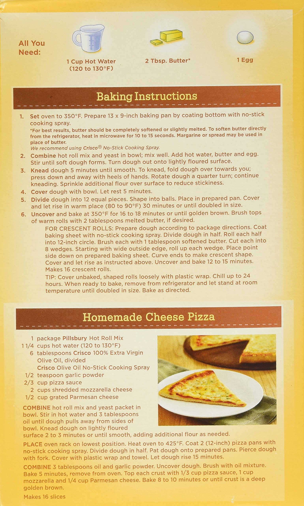

Modified from original copy for broader (non-family) comprehension. Much of the literary flair has been kept.
STUFF Required:
INSTRUCTIONS:
FOLLOW PIZZA DIRECTIONS FOR INGREDIENTS (picture of the side of a hot roll mix
box is located for convenience below) AND OVEN TEMPERATURE. BUT LOOK AT BREAD
DIRECTIONS FOR MIXING AND KNEADING AND RISING!
DON'T FORGET THE YEAST!!!!! And nice and hot water recommended when it is
added
MIXOLOGY:
Make sure you stir in the yeast well into the flour before you add the water.
Knead well using flour as needed when sticky. let rise, take the dough and
spread it out. Take a rolling pin or facsimile cover with flour (also your
hands) and roll to large rectangle.
Take pan and turn upside down and make cookie cutter type imprint in the
dough, then cut out with a relatively clean pair of scissors, lay in pan. and
punch multiple stab wounds into the dough to aerate..
While the dough is rising…
PREHEAT OVEN to 425!!!
SEQUENCE:
This is where the magic happens
The Big Finish!
Appendix: ROLL MIX SIDE OF BOX
